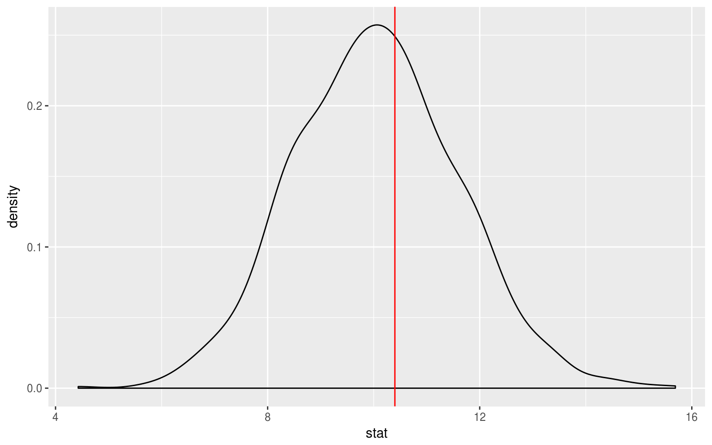
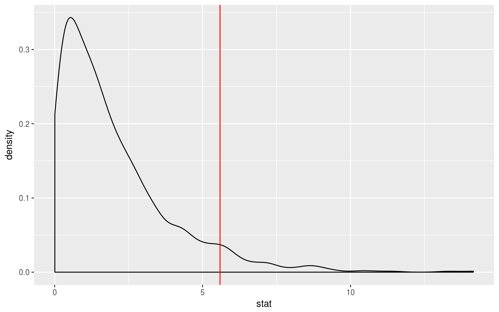

Randomization Examples using nycflights13 flights data
Chester Ismay and Andrew Bray
2018-01-05
Source:vignettes/flights_examples.Rmd
flights_examples.RmdData preparation
library(nycflights13)
library(dplyr)
library(ggplot2)
library(stringr)
library(infer)
set.seed(2017)
fli_small <- flights %>%
na.omit() %>%
sample_n(size = 500) %>%
mutate(season = case_when(
month %in% c(10:12, 1:3) ~ "winter",
month %in% c(4:9) ~ "summer"
)) %>%
mutate(day_hour = case_when(
between(hour, 1, 12) ~ "morning",
between(hour, 13, 24) ~ "not morning"
)) %>%
select(arr_delay, dep_delay, season,
day_hour, origin, carrier)- Two numeric -
arr_delay,dep_delay - Two categories
-
season("winter","summer"), -
day_hour("morning","not morning")
-
- Three categories -
origin("EWR","JFK","LGA") - Sixteen categories -
carrier
Hypothesis tests
One numerical variable (mean)
x_bar <- fli_small %>%
summarize(mean(dep_delay)) %>%
pull()
null_distn <- fli_small %>%
specify(response = dep_delay) %>%
hypothesize(null = "point", mu = 10) %>%
generate(reps = 1000, type = "bootstrap") %>%
calculate(stat = "mean")
ggplot(data = null_distn, mapping = aes(x = stat)) +
geom_density() +
geom_vline(xintercept = x_bar, color = "red")
null_distn %>%
summarize(p_value = mean(stat > x_bar) * 2)## Response: dep_delay (numeric)
## # A tibble: 1 x 1
## p_value
## <dbl>
## 1 0.794One numerical variable (median)
x_tilde <- fli_small %>%
summarize(median(dep_delay)) %>%
pull()
null_distn <- fli_small %>%
specify(response = dep_delay) %>%
hypothesize(null = "point", med = 0) %>%
generate(reps = 1000, type = "bootstrap") %>%
calculate(stat = "median")
ggplot(null_distn, aes(x = stat)) +
geom_bar() +
geom_vline(xintercept = x_tilde, color = "red")
null_distn %>%
summarize(p_value = mean(stat < x_tilde) * 2)## Response: dep_delay (numeric)
## # A tibble: 1 x 1
## p_value
## <dbl>
## 1 0.One categorical (one proportion)
p_hat <- fli_small %>%
summarize(mean(day_hour == "morning")) %>%
pull()
null_distn <- fli_small %>%
specify(response = day_hour, success = "morning") %>%
hypothesize(null = "point", p = .5) %>%
generate(reps = 1000, type = "simulate") %>%
calculate(stat = "prop")
ggplot(null_distn, aes(x = stat)) +
geom_bar() +
geom_vline(xintercept = p_hat, color = "red")
null_distn %>%
summarize(p_value = mean(stat < p_hat) * 2)## Response: day_hour (factor)
## Null Hypothesis: point
## # A tibble: 1 x 1
## p_value
## <dbl>
## 1 0.108Logical variables will be coerced to factors:
null_distn <- fli_small %>%
mutate(day_hour_logical = (day_hour == "morning")) %>%
specify(response = day_hour_logical, success = "TRUE") %>%
hypothesize(null = "point", p = .5) %>%
generate(reps = 1000, type = "simulate") %>%
calculate(stat = "prop")Two categorical (2 level) variables
d_hat <- fli_small %>%
group_by(season) %>%
summarize(prop = mean(day_hour == "morning")) %>%
summarize(diff(prop)) %>%
pull()
null_distn <- fli_small %>%
specify(day_hour ~ season, success = "morning") %>%
hypothesize(null = "independence") %>%
generate(reps = 1000, type = "permute") %>%
calculate(stat = "diff in props", order = c("summer", "winter"))
ggplot(null_distn, aes(x = stat)) +
geom_density() +
geom_vline(xintercept = d_hat, color = "red")
## [1] 0.58One categorical (>2 level) - GoF
Chisq_hat <- fli_small %>%
chisq_stat(formula = origin ~ NULL)
null_distn <- fli_small %>%
specify(response = origin) %>%
hypothesize(null = "point",
p = c("EWR" = .33, "JFK" = .33, "LGA" = .34)) %>%
generate(reps = 1000, type = "simulate") %>%
calculate(stat = "Chisq")
ggplot(null_distn, aes(x = stat)) +
geom_density() +
geom_vline(xintercept = Chisq_hat, color = "red")
## [1] 0.005Two categorical (>2 level) variables
Chisq_hat <- fli_small %>%
chisq_stat(formula = day_hour ~ origin)
null_distn <- fli_small %>%
specify(day_hour ~ origin, success = "morning") %>%
hypothesize(null = "independence") %>%
generate(reps = 1000, type = "permute") %>%
calculate(stat = "Chisq")
ggplot(null_distn, aes(x = stat)) +
geom_density() +
geom_vline(xintercept = Chisq_hat, color = "red")
## [1] 0.013One numerical variable, one categorical (2 levels) (diff in means)
d_hat <- fli_small %>%
group_by(season) %>%
summarize(mean_stat = mean(dep_delay)) %>%
summarize(diff(mean_stat)) %>%
pull()
null_distn <- fli_small %>%
specify(dep_delay ~ season) %>% # alt: response = dep_delay,
# explanatory = season
hypothesize(null = "independence") %>%
generate(reps = 1000, type = "permute") %>%
calculate(stat = "diff in means", order = c("summer", "winter"))
ggplot(null_distn, aes(x = stat)) +
geom_density() +
geom_vline(xintercept = d_hat, color = "red")
## [1] 0.454One numerical variable, one categorical (2 levels) (diff in medians)
d_hat <- fli_small %>%
group_by(season) %>%
summarize(median_stat = median(dep_delay)) %>%
summarize(diff(median_stat)) %>%
pull()
null_distn <- fli_small %>%
specify(dep_delay ~ season) %>% # alt: response = dep_delay,
# explanatory = season
hypothesize(null = "independence") %>%
generate(reps = 1000, type = "permute") %>%
calculate(stat = "diff in medians", order = c("summer", "winter"))
ggplot(null_distn, aes(x = stat)) +
geom_bar() +
geom_vline(xintercept = d_hat, color = "red")
## [1] 0One numerical, one categorical (>2 levels) - ANOVA
F_hat <- anova(
aov(formula = arr_delay ~ origin, data = fli_small)
)$`F value`[1]
null_distn <- fli_small %>%
specify(arr_delay ~ origin) %>% # alt: response = arr_delay,
# explanatory = origin
hypothesize(null = "independence") %>%
generate(reps = 1000, type = "permute") %>%
calculate(stat = "F")
ggplot(null_distn, aes(x = stat)) +
geom_density() +
geom_vline(xintercept = F_hat, color = "red") 
## [1] 0.313Two numerical vars - SLR
slope_hat <- lm(arr_delay ~ dep_delay, data = fli_small) %>%
broom::tidy() %>%
filter(term == "dep_delay") %>%
select(estimate) %>%
pull()
null_distn <- fli_small %>%
specify(arr_delay ~ dep_delay) %>%
hypothesize(null = "independence") %>%
generate(reps = 1000, type = "permute") %>%
calculate(stat = "slope")
ggplot(null_distn, aes(x = stat)) +
geom_density() +
geom_vline(xintercept = slope_hat, color = "red") 
## [1] 0Confidence intervals
One numerical (one mean)
x_bar <- fli_small %>%
summarize(mean(arr_delay)) %>%
pull()
boot <- fli_small %>%
specify(response = arr_delay) %>%
generate(reps = 1000, type = "bootstrap") %>%
calculate(stat = "mean") %>%
pull()
c(lower = x_bar - 2 * sd(boot),
upper = x_bar + 2 * sd(boot))## lower upper
## 1.116978 8.027022One categorical (one proportion)
p_hat <- fli_small %>%
summarize(mean(day_hour == "morning")) %>%
pull()
boot <- fli_small %>%
specify(response = day_hour, success = "morning") %>%
generate(reps = 1000, type = "bootstrap") %>%
calculate(stat = "prop") %>%
pull()
c(lower = p_hat - 2 * sd(boot),
upper = p_hat + 2 * sd(boot))## lower upper
## 0.4195101 0.5124899One numerical variable, one categorical (2 levels) (diff in means)
d_hat <- fli_small %>%
group_by(season) %>%
summarize(mean_stat = mean(arr_delay)) %>%
summarize(diff(mean_stat)) %>%
pull()
boot <- fli_small %>%
specify(arr_delay ~ season) %>%
generate(reps = 1000, type = "bootstrap") %>%
calculate(stat = "diff in means", order = c("summer", "winter")) %>%
pull()
c(lower = d_hat - 2 * sd(boot),
upper = d_hat + 2 * sd(boot))## lower upper
## -6.226432 7.716831Two categorical variables (diff in proportions)
d_hat <- fli_small %>%
group_by(season) %>%
summarize(prop = mean(day_hour == "morning")) %>%
summarize(diff(prop)) %>%
pull()
boot <- fli_small %>%
specify(day_hour ~ season, success = "morning") %>%
generate(reps = 1000, type = "bootstrap") %>%
calculate(stat = "diff in props", order = c("summer", "winter")) %>%
pull()
c(lower = d_hat - 2 * sd(boot),
upper = d_hat + 2 * sd(boot))## lower upper
## -0.11250858 0.07141795Two numerical vars - SLR
slope_hat <- lm(arr_delay ~ dep_delay, data = fli_small) %>%
broom::tidy() %>%
filter(term == "dep_delay") %>%
select(estimate) %>%
pull()
boot <- fli_small %>%
specify(arr_delay ~ dep_delay) %>%
generate(reps = 1000, type = "bootstrap") %>%
calculate(stat = "slope") %>%
pull()
c(lower = slope_hat - 2 * sd(boot),
upper = slope_hat + 2 * sd(boot)) ## lower upper
## 0.9659087 1.0679892